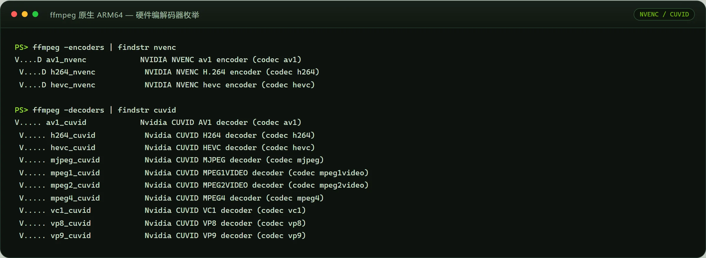
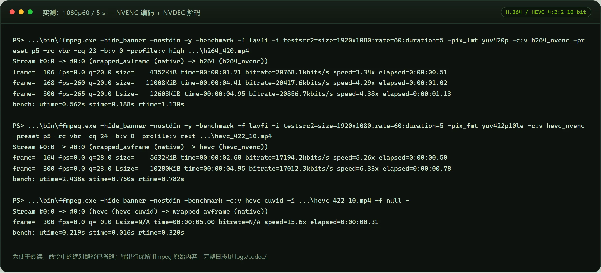
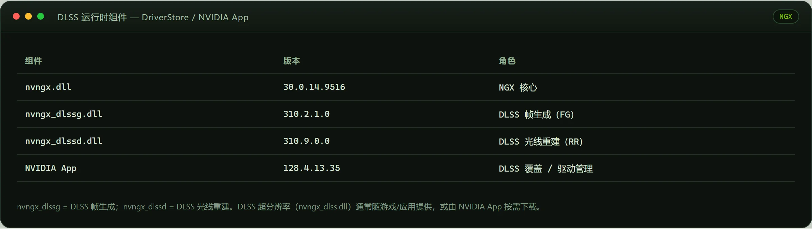
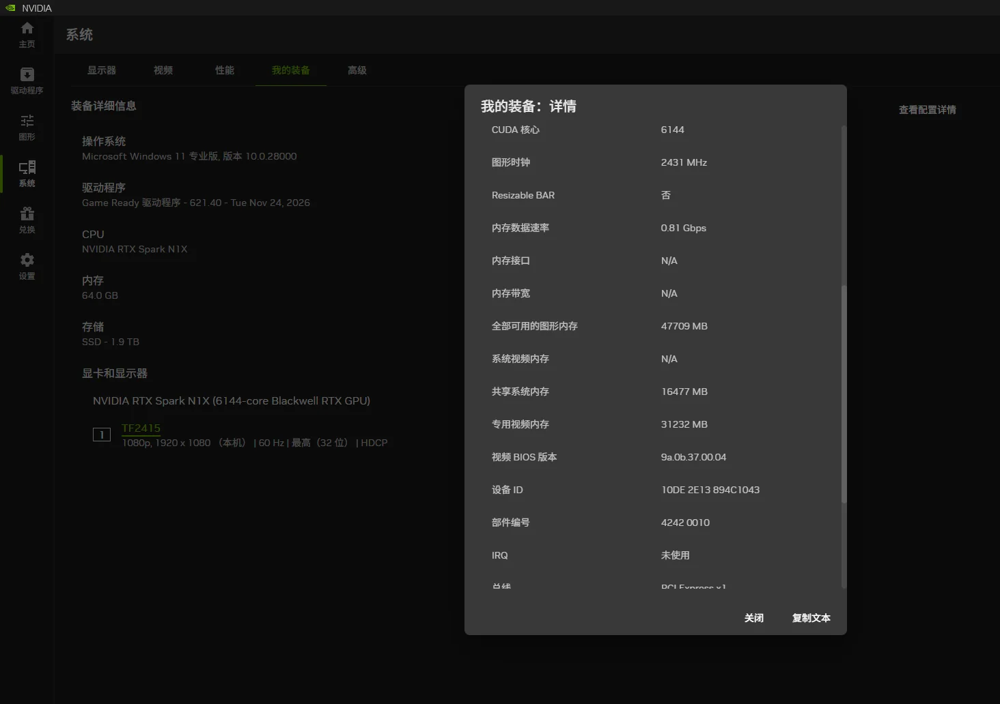
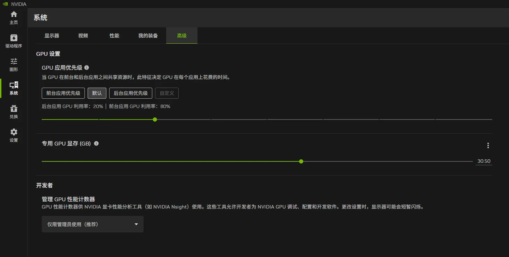

最直接的一张图：539 MiB / 31,232 MiB
这是本报告引用最多的原始读数。它同时给出驱动、CUDA UMD、显存分区、功耗状态与当前进程；但它只代表 2026-11-25 12:13:31 这一时刻。

nvidia-smi 原始输出（2026-11-25 12:13:31）。GPU 名称被截断为 NVIDIA RTX Spark N1X (61...；驱动模型 WDDM。| 字段 | 读数 | 它回答什么 |
|---|---|---|
| NVIDIA-SMI 版本 | 621.40 | 工具与驱动同版本号 |
| KMD Version | 621.40 | 内核模式驱动 |
| CUDA UMD Version | 13.5 | 用户态 CUDA 组件；不等于 CUDA Toolkit |
| GPU Name | NVIDIA RTX Spark N1X（显示截断） | SoC 内 GPU |
| Driver-Model | WDDM | Windows 显示驱动模型 |
| Bus-Id | 0000000F:01:00.0 | SoC 内部呈现的链路 |
| Memory-Usage | 539 MiB / 31,232 MiB | 当前占用 / 专用 FB 总量 |
| GPU-Util | 3% | 采样时刻利用率 |
| Temp / Perf / Pwr | 39 °C · P8 · 2 W / N/A | 空闲状态；功耗上限字段为 N/A |
| Processes | Hermes Agent.exe · msedgewebview2.exe | 均为 C+G（计算 + 图形） |
桌面合成、浏览器与常驻应用已经占了约 0.5 GiB。后续带宽基准就是在这个基线上跑的，不是裸机。
它等于 30.50 GiB，是专用帧缓冲；CUDA 配额 45.92 GiB 不在这张图里。三个内存口径见 04 报告。
这是空闲功耗读数；官方 SoC TDP 为 140 W。不要把 2 W 当成“整机功耗上限”。
官方规格页：三档并列，本机是第三列
以下为 NVIDIA 中国官网规格页的长图（2026-11-26 抓取）：三档并列，第三列为桌面主机档，也是本机对应档位。归档见 中文 HTML · PDF · 英文 HTML。

| 项目 | 笔记本档 | 笔记本档 | 桌面主机档（本机） |
|---|---|---|---|
| GPU | 6144-core | 5120-core | 6144-core |
| CPU | 20-core Grace | 18-core Grace | 20-core Grace |
| NPU | NVIDIA NPU | NVIDIA NPU | “-” |
| 功耗（TDP） | 45–80 W | 45–80 W | 140 W |
| AI 性能 | 1 Petaflop | 827 Teraflops | 1 Petaflop |
| 内存 | 统一内存，最高 128 GB LPDDR5X | 统一内存，最高 32 GB LPDDR5X | 统一内存，最高 128 GB LPDDR5X；本机实测配置 64 GiB（标称 64 GB） |
| 显存位宽 | 256-bit | 256-bit | 256-bit |
| RT / Tensor | 第四代 / 第五代 | 第四代 / 第五代 | 第四代 / 第五代 |
| NVENC / NVDEC | 1× 第九代 / 1× 第六代 | 1× 第九代 / 1× 第六代 | 1× 第九代 / 1× 第六代 |
| DLSS | DLSS 5 | DLSS 5 | DLSS 5（6 个子项全勾） |
| PCIe | 第五代 | 第五代 | 第五代 |
官方 DLSS 不是只写了一个“支持”。规格页把 DLSS 5 拆成 6 个子项逐条打勾：3D 引导神经渲染、动态多帧生成、帧生成、光线重建、超分辨率、DLAA。这与本机 DriverStore 中的 NGX 运行时组件相互印证。真正游戏内的帧生成/超分帧率仍取决于具体游戏是否调用 DLSS。
媒体能力：ffmpeg 枚举 + 7 组编解码
官方矩阵给出 N1X 的完整编解码列；本机用 ffmpeg 原生 ARM64 做 1080p60 / 5 s testsrc2 实测。编码用 NVENC preset p5、VBR CQ；解码用对应 cuvid 解码器。


| 测试 | 像素格式 | 编码 | 平均码率 | 解码 |
|---|---|---|---|---|
| H.264 4:2:0 8-bit | yuv420p | 通过 4.38× | 20.6 Mbps | 通过 23.3× |
| HEVC 4:2:0 10-bit | yuv420p10le | 通过 6.46× | 16.4 Mbps | 通过 20.6× |
| AV1 4:2:0 8-bit | yuv420p | 通过 6.14× | 17.9 Mbps | 通过 18.8× |
| H.264 4:2:2 8-bit | yuv422p | 通过 4.41× | 22.3 Mbps | 通过 21.5× |
| HEVC 4:2:2 10-bit | yuv422p10le | 通过 6.33× | 16.8 Mbps | 通过 15.6× |
| H.264 4:4:4 8-bit | yuv444p | 通过 4.26× | 24.3 Mbps | 不支持 色度格式不支持 |
| HEVC 4:4:4 10-bit | yuv444p10le | 通过 5.91× | 17.2 Mbps | 通过 11.4× |
H.264 4:2:0 / 4:2:2 / 4:4:4、HEVC 4:2:0 10-bit / 4:2:2 10-bit / 4:4:4 10-bit、AV1 4:2:0 全部成功。
H.264 4:2:0 / 4:2:2、HEVC 4:2:0 / 4:2:2 / 4:4:4、AV1 通过；H.264 4:4:4 不在 NVDEC 支持范围。
12 个 720p30 NVENC 进程同时编码全部返回 0；第 13 路报 OpenEncodeSessionEx failed: incompatible client key (21)，与官方矩阵 12 路上限一致。
H.264 4:4:4 的“不支持”是解码路径：h264_nvenc 先编码成功；h264_cuvid 打开解码器时报 Codec h264_cuvid is not supported with this chroma format（EINVAL）。这是 NVDEC 不支持该色度格式，不是文件损坏或脚本错误；官方矩阵也只列 H.264 解码 4:2:0 / 4:2:2。
光追管线与 DLSS 运行时
官方：第四代 RT Core、第五代 Tensor Core、DLSS 5 全套、DX12 Ultimate、Vulkan RT API。本机：dxdiag Feature Level 12_2；Vulkan 枚举到 ray_query / ray_tracing_pipeline；DLSS 的 NGX 运行时组件在 DriverStore。

VK_KHR_ray_query、VK_KHR_ray_tracing_pipeline、VK_KHR_ray_tracing_position_fetch，以及 NV ray tracing 扩展；视频侧同时枚举到 H.264 / H.265 / AV1 编码与 H.264 / H.265 / AV1 / VP9 解码。
nvngx.dll 30.0.14.9516、nvngx_dlssg.dll 310.2.1.0（帧生成）、nvngx_dlssd.dll 310.9.0.0（光线重建）；NVIDIA App 128.4.13.35。| 能力 | 本机证据 | 判定 |
|---|---|---|
| DirectX 12 Ultimate | dxdiag Feature Levels 12_2 | 一致 |
| Vulkan 光追 | Vulkan 1.4.357；ray_query / ray_tracing_pipeline / position_fetch | 一致 |
| DLSS 5 | 官方 6 个子项全勾；NGX 运行时存在 | 一致 |
| 游戏内帧生成/超分 | 未在支持 DLSS 的游戏中做帧率实测 | 未验证 |
边界说明：本报告验证的是“官方支持 + 运行时存在 + 光追 API 可用”。没有在支持 DLSS 的游戏中做帧生成/超分的帧率实测，因此不把 DLSS 5 的官方能力当成某个游戏的实测提升幅度。
版本字段说明：DLSS 运行时表里的 “NVIDIA App 128.4.13.35” 是驱动侧 DLSS 覆盖 / 驱动管理组件的版本号，不是 NVIDIA App 安装器版本；后者在 02 报告中为 11.0.10.136。两者不是同一个字段。
NVIDIA App：GUI 侧的四个关键页
完整 18 张截图与逐页读数见 02 NVIDIA App 图文配置。这里只放四个交叉核对最常用的页面。




两套口径。NVIDIA App 报 Direct3D 功能级别 12_1；Windows dxdiag 报 Feature Levels 12_2。两者引用时都要写明来源，不要混成一个数字。应用不显示 CUDA 版本，CUDA 13.5 来自 nvidia-smi 旁证。
原始文件与归档
| 文件 | 内容 |
|---|---|
| img/h3/… · 07 视频报告 | MiniMax H3 的 NVML / typeperf 遥测曲线与成片抽帧 |
| spec/…zh.html · spec/…zh.pdf | 官方规格页归档（中文） |
| spec/nvidia-video-codec-matrix.html | NVIDIA 官方编解码支持矩阵归档 |
| ASUS GR1X 内存与带宽实测报告.pdf | 内存全报告 PDF |
| GPU 性能跑分报告.pdf | GPU 基准 PDF |
| NVIDIA App 图文报告.pdf | 18 张截图的 PDF 版 |
| Qwen3.8-27B 测试报告.pdf | 本地推理 PDF |

原始日志（system / cuda-props / nvidia-smi / dxdiag / vulkan、codec / nvenc / qwen / mem，共 101 个文件）未随公开站点发布，保留在作者本地；如需核查具体读数，可提供脱敏副本。
数字字典：六组最容易混的口径
| 口径 | 本机值 | 含义 / 不要怎么用 |
|---|---|---|
| GiB vs GB | 31,232 MiB = 30.50 GiB = 32.75 GB | 1 GiB = 230 B；1 GB = 109 B。容量默认 GiB，带宽默认 GB/s。 |
| FB / CUDA 配额 / 系统可见 | 30.50 / 45.92 / 32.18 GiB | 三个数字回答不同问题，不能相加。45.92 − 30.50 = 15.42 是残差。 |
| 最大单次分配 vs 配额 | 45.75 vs 45.92 GiB | 配额是读数，45.75 是 3/3 会话夹逼的可分配量；差 0.17 GiB。 |
| 纯读 / 纯写 / D2D | 252 / 183 GB/s；D2D 单向 116.5–117.5（总流量 233–235，视会话） | 不要用 D2D 单向或 memset 写去估算读密集任务。三个口径不能相加或混用。 |
| 官方 / 实测 / 推算 | 1 PFLOP / 58.9 TFLOPS FP16 / 473.8 TFLOPS FP4 | 1 PFLOP 是官方 FP4 稀疏；58.9 是实测；473.8 是推算。不能互相替代。 |
| 1×Gen1 / C2C / 32-bit | 当前 1×Gen1；C2C Enabled；SMBIOS 32-bit | 都是链路 / 单器件读数，不是规格降级；官方 PCIe Gen5、SoC 256-bit。 |
不同报告的同名指标可能来自不同会话（例如 D2D 单向 117.5 vs 118.1、纯读 252.0 vs 252.1）；差异在会话波动内，引用时带上报告名与日期，不要把两个数当成矛盾。
证据等级与“没有做什么”
例如 6 会话跨边界扫描、5 会话纯读、7/7 编码、12 路 NVENC 并发。可直接引用为“在本机该状态下成立”。
例如单次 D2H、单次 40 GiB 提交量、NVIDIA App 的瞬时性能页。引用时写明“单次 / 某一时刻”。
例如 FP4 473.8、1.32 GiB 固件保留、2.41 GHz 推算峰值。不能当硬件实测上限。
本站在这些地方明确“没有做”：没有跑 3DMark / Blender / 任何游戏；没有在支持 DLSS 的游戏中做帧生成帧率实测；没有跑 FP4 GEMM；没有做 >40 GiB、>10 min 的长时间超配；没有做 30 分钟以上的热漂移；没有做内存压力下的驱逐实测；没有在 Linux / DGX OS 上复测。
这些不是“省略”，而是结论的边界。需要时应在同一台机器上补测，而不是从现有数据外推。